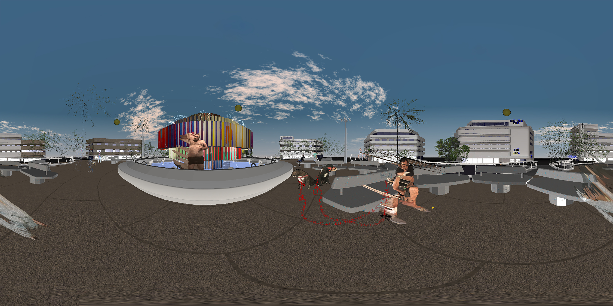

Tzina symphony of longing
Shirin Anlen
- 
Click to Experience
Requirements
| Edge | Chrome | Chromium | Firefox | Firefox Nightly | Safari | |
|---|---|---|---|---|---|---|
| Desktop (360) | ✔ | ✔ | ✔ | ✔ | ✔ | ✔ |
| Google Cardboard | ✔ | ✔ | ✔ | |||
| Oculus Rift | ✔(Windows) | ✔(Windows) | ||||
| HTC Vive | ✔(Windows) | ✔(Windows) |
Note: Viewing content in 360-degrees on your Desktop or using a mobile device with Google Cardboard does not usually require any special browser setup. For instructions on how to setup your browser to work with a VR headset like the Oculus Rift or HTC Vive click on the browser name above. The Samsung Gear VR and Google Daydream are also good choices for experiencing WebVR. If the piece works on Google Carboard it is likely to work on these as well.
Description
Tzina: symphony of longing is a poetic, interactive webVR documentary in which the residents of the run-down Dizengoff Square in Tel Aviv muse on lost loves and things that are no more.
At the beginning of 2017, Tzina Dizengoff square, one of Tel Aviv’s emblematic sites, has been demolished. The square was a home for the lonely and marginalized characters of the area. This project tells the story of the people who gravitated toward the square and spent their days in it, sitting on the same benches around the monumental fountain sculpture in its center. Different reasons led them there. They seem to be flocking to the square and merged with it in an almost symbiotic relationship, until it seems that they might be consoled by their shared loneliness at the ever-moving urban landscape. The project allows us to visit in a place that no longer exists.
Tzina: Symphony of Longing invites the viewer for a physical walk to explore the square and it characters in different times of the day, with elements of animation, fantasy and interactive sound. It’s a fully interactive non-linear webVR documentary for the Chrome Browser / HTC Vive. The viewer moves the story forward by acting in the virtual world- physically walking in the virtual square and approaching the characters.
The characters were shot with Kinect in order to create a 3D body of live interviews. The viewer meets the real people while sitting alongside them in the square. There are 13 different characters, spread over 5 episodes. Each episode in the experience represents a different part of the day - from dawn to dusk, linking the episode’s protagonists to a specific theme that emerges from their personal story. Each encounter with a character combines elements of animation that depict parts of the story and detached the documentary aspect of the encounter into more fantasy one.
Tzina is a multi-user documentary - each viewer is represented by a pigeon, walking inside the virtual square. That way the viewers can be alone, yet together in the square (just like the characters).
Bio
- Created, Directed & Produced > Shirin Anlen Shirin Anlen (1985) is an Interactive creator working at the intersection of technology and exploratory arts. Her work combines various participatory practices that explore how new technologies can enrich audio- visual narratives. Shirin’s works have been exhibited internationally including IDFA DocLab, “Next” Festival de Cannes, HeK- House of Electronic Basel, Museum of Moscow and the Israeli Center of Digital Art. Shirin founded the first interactive and VR storytelling festival and lab in Israel and currently developing her second webVR-AI feature. *Lead Developer > Avner Peled Avner Peled started as military trained computer programmer and security researcher witha B.Sc in Neurobiology and Philosophy. After moving between different positions in the IT and gaming industry, he turned toward social involvement, volunteering within Israel’s refugee youth community, working with the Tel-Aviv maker-space and participating in Israeli-Palestinian conflict resolution activities. Now he seeks to combine his technical and scientific knowledge to create critical art and designs in Finland’s Media Lab Helsinki, as an M.A student for New Media Art and Design. *Design Director > Ziv Schneider Ziv Schneider (b. 1984) is a multi-media artist working at the intersection of documentary, video games and volumetric photography. Her work combines various design practices to explore how new technologies enrich visual narratives with spatialization and interaction. She has created several virtual reality experiences including the Museum of Stolen Art and RecoVR:Mosul - the first virtual reality piece released by the Economist. Her work has exhibited internationally including MOMA, IDFA DocLab, and the Tribeca Film Festival. Recently completed a year long fellowship at NYU ITP where she also teaches interactive documentary. An incoming tech resident at Pioneer Works where she will be developing her ongoing exploration of single person households and micro-living. *Technical Director > Or Fleisher a director, developer and artist and most recently a graduate candidate at ITP, NYU. His work uses sound interaction and graphics to drive web experiences, installations and tools he creates. Or’s works have been featured in festivals including IDFA, Seattle Transmedia, Kaleidoscope VR, Patch Lab, Los Angeles New Media Festival, Miami FilmGate and won awards in international art, new media and film festivals. Featured in Creators Project / VR Developer / Communication Arts / Z Awards include WorldFest NASA Remi Award, FWA, Urban Media Makers (Best Interactive) *Creative coder > Laura Juo-Hsin Chen, 陳若昕 is a creative technologist and animator from Taipei, Taiwan. She is interested in weird human interactions and the impact of them on the subconscious, and often uses open source technology to create lighthearted and publicly accessible experience, from web platform, VR, portable objects, multiuser environment, to physical computing. Laura is currently living in Brooklyn, NY. *Script editor > Udi Ben-Arie Udi Ben-Arie is a lecturer, researcher and practitioner, his work centers on interactive digital storytelling and user experience in new media works. Ben-Arie has directed and shot several interactive and documentary movies, among others: In 1995, his short film “Second Watch” was nominated for an Oscar for best foreign language student film. In 2003, together with Noam Knoller, Amnon Dekel and others, he created “One Measure of Happiness”, his first gesture-based interactive movie on a touch-screen platform. He is head of the production courses in the Digital Media Program, at the Steve Tisch School of Film and Television, Tel-Aviv University, and a lecturer at the Screen-Based Department at the Bezalel Academy of Arts and Design, Jerusalem.